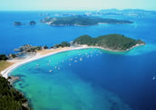

Northland
Northland is a region of tidal estuaries, beautiful silver-coloured beaches, mangroves and dense native forests. Also regarded as the birthplace of a nation, it was here (on the 6th of February, 1840) that the Treaty of Waitangi, New Zealand's founding document, was signed.
Whangarei, Northland's largest settlement and main commercial centre is located further south of Paihia on the east coast. Known for its thriving craft galleries and ethnic restaurants, Whangarei is full of cultural character and rich colonial architecture. Ocean beach, just east of Whangarei, is also well worth a visit. In the far northern tip, Cape Reinga is located on the far northern tip of New Zealand and offers great views of the deep blue Pacific Ocean meeting the Tasman Sea. The white sands of Ninety Mile beach, New Zealand's longest beach, is also a must see.
Waipoua forest (on the west coast) is well worth a visit. This native forest contains some of New zealand's last remaining Kauri trees. These towering conifers are amongst some of the tallest trees in the world. Tane Mahuta (Maori for 'Lord of the Forest') stands at 52 metres tall. The Bay of Islands in the east is a sleepy backwater of immense beauty and tranquility. Exploration of the many outlying islands and beaches is a must. Kerikeri, Paihia and Russell are three of the area's main centres. Waitangi (a short walk from Paihia) is where the Treaty of Waitangi was signed in 1840.